Tutorial 03 - Full Consolidated Content
Tutorial 03a - Recap and Finish (Full Content)
Tutorial 03a – Tutorial 02 Recap and Finish
Finish the Week 2 Motionbuilder
Tutorial and export the clips
https://youtu.be/d9Hb7OBsACU

1. Clips Stand Talk 1a,b,c need Poses pasted onto end to loop
2. Do this by the method in the Tutorial 02 sheet and videos for Clip Stand Talk 1a
3. POSES
a. Make sure Mirror is off (M in Pose Controls)
b. Make sure ALL nodes are selected in Character Controls window (Feet, Hands, Root between feet)
c. Make sure Full Body Mode is selected in top of Character Controls Window
4. PITFALLS OF STORY TO AVOID
a. MAKE SURE GHOST IS ZERO FOR TRANSLATION AND ROTATION
i. Must select Ghost Button in Story track (Eye in Left Side Story Track)
ii. Must select Animation Clip (Right Side of Story Track)
iii. Must Select Root Node between characters feet (Character Control Window)
b. MAKE SURE ANIMATION KEY IS OFF WHEN NOT USING
c. CHECK FRAMERATE IS CONSISTENT WHEN PROCESSING
5. Process track and subtrack (pose paste on additive subtrack) to new track and clip
6. Name as “Clip _ _ _” as these are animation only fbx files.
7. Export the processed Clips by:
a. Right clicking on them in the right side of story tracks
b. Select make clip writable
c. Processing already saved out the clips, but this is method 2
d. Export Stand Idle Loop and Talks 1a,b,c
e. Copy and paste to first track, arrange, and export all as one clip.
8. Since These clips are animation only, we also need the character and skeleton

a. Clips will drive this model and skeleton
b. Remember we need to bake animation to the skeleton to export
c. To do this, mute all Story tracks, get out of Story and back to Navigator
d. In Navigator, Select the Mia Character
e. Select Stand Input (Default Tpose)
f. Enter Start and End frames on Transport Control to 0,1
g. Plot to skeleton
Save scene as Mia Stance from File drop down
Tutorial 03b - Unity, Mia and Mixamo (Full Content)
Tutorial 03b – Mia fbx to Unity, then Mixamo fbx with and without Ref node to Unity
Mixamo T-Pose (with Model) + Fbx Animation Clips. This will
be the workflow for CW1 and CW2.
*Minimum required is Motionbuilder Mia model and Talk animations.
To prevent feet sliding when blending animations in Unity Animator(Mechanim), add a root node in motionbuilder on the T-pose, then check it on all added Fbx Clips
Mixamo does not natively come with a root node...This is not a problem, but the usage with root and without is different.
There is some issue using root if you have a variety of scaled characters, so it is best to use all Mixamo, or all Mixamo Fuse Characters, or not use root with characters of varied scale. We will look at this more later, but it is best to have the option.
Tutorial 03b 00 – MotionBuilder and Unity - Mia with Ref Node (Root)
Overview Mia Unity Video:
Tutorial
03 MiaRecap 1080.mp4
- Start with Mia Finished Tutorial 02 Fbx Scene in BB zip
- Create new or Drag Mia Stance TPose Fbx Scene into Unity Project window
- Note: if you are using Characterised/Control Rig plotted clips, also use this to create the stance for it to match up in Unity.
- Select Mia TPose in Project Window
- In Inspector Window, select Materials tab far right
- In Location, select Drop down box and select legacy materials
- Select Apply, see folders created.
- Drag all animation clips into a new Anims folder in Fbx folder
- Clip Mia Stand Looped
- Clip Stand Talk 1a Looped
- Clip Stand Talk 1b Looped
- Clip Stand Talk 1c Looped
- Clip All Talk Anims
- Select the top level of Mia Stance T Pose Fbx file in project window
- Look at the tabs for the file in the top right of Inspector Window
- Rig Tab
- Animation Type - Humanoid Rig
- Avatar Definition – Create from this model
- Look at configure – just like MB Story
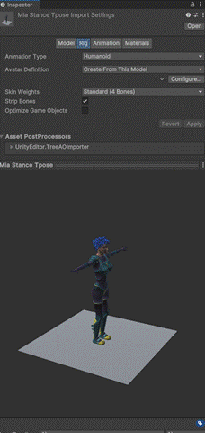
https://gyazo.com/ff141656a87fb6e87087c352273cfa28
- Animations Tab - For Root
- Turn off Anim. compression
- Loop Time - if needed
- At Bottom – Motion Dropdown
- Select Mia Character Root from Motionbuilder
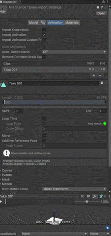
https://gyazo.com/3dd85c3dcc8d2cd3f5c53e05e811d3ab
- For each animation clip:
- Select the top level
- Look at the tabs for the file in the top right of Inspector Window
i. Rig Tab
1. Animation Type - Humanoid Rig
2. Avatar Definition – Copy from other avatar
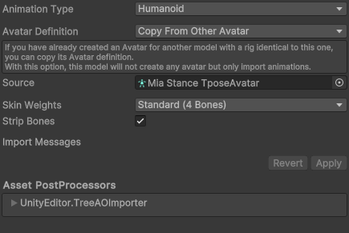
https://gyazo.com/e6b9db14fe6a2ab4262da642d7a298cc
3. Drag in avatar from Mia Tpose that was created (you can find it in the project window view)
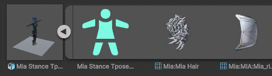
https://gyazo.com/07a8067b3c869ca63d4dd2b5e2a1b895
4. Look at configure – just like MB Story
ii. Animations Tab - For Root
1. Turn off Anim. compression
2. Loop Time - if needed (just for stand loop)
3. At Bottom – Motion Dropdown
a. Select Mia Character Root from Motionbuilder
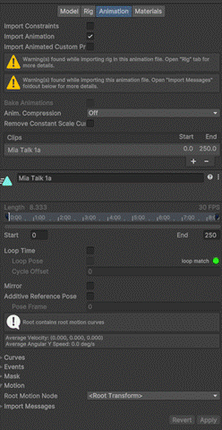
https://gyazo.com/ae3b5e6fa202ff47b10d24e7e91d5be6
- If using a combined animation clip rather than separate, Do steps 12-14 for the Combined Animation clip as well, select Avatar from the Mia TPose
- With the combined clip selected, in Inspector/Animation Tab, create additional clips for the following frames:
- 0-19 - Stand
- 20-219 - Talk 1a
- 220-499 - Talk 1b
- 500-1094 - Talk 1c
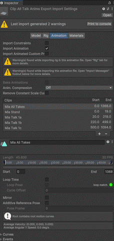
https://gyazo.com/f93f4c95cffc6f235b7d8a81d8ca544b
- To create additional clips:
- click the + sign and type in a new name in the box below
- adjust the start and end frames in the boxes
- click apply at the bottom
- Create Animator Controller in the Anims folder:
- Right click >Create > Animator Controller
- Name it AC1
- Drag this onto the Mia in the scene heirarchy – it adds the Animator component and links this Animator Controller.
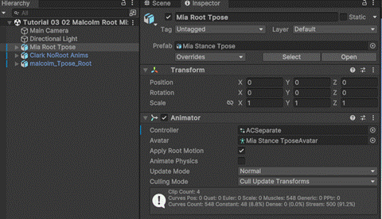
https://gyazo.com/39055bd72f04b7e15716a3cca3e1ea0e
- Open Animator Window
- Populate Animator Window
- Drag in Stand Loop - becomes Default State
- Drag in Mia Talk 1a, 1b, 1c – (either from the combined set or separate)
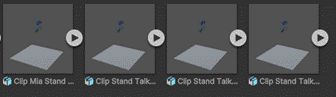
Separate
https://gyazo.com/e83880a988ee68915a3be7e11ac479a4
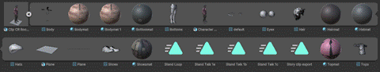
Combined
https://gyazo.com/1099d77cd209dc545692387b5ceae7c2
- Make transitions to each from Any State with right clicks
- Make transitions from each to Exit by right click
- Test in Playback
- Move camera and Light to other side of Mia with Transport Bar - Translate and Rotate
- Make Triggers
- Create triggers in Animator Parameters by pressing the “+” sign and selecting Trigger in the drop down box.
- ReName the Triggers as Talk 1a, Talk 1b, Talk 1c
- Attach as conditions to transitions from Any State to the Talk animations by
- Selecting the transition lines
- Selecting the preferred trigger in the conditions drop down box on the right hand panel
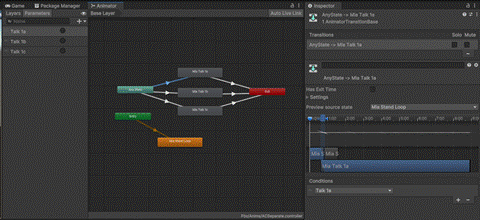
https://gyazo.com/14e79aeffaef8ccea028c85f48f388c0
- Script for key press:
- TriggerAnims.cs:
https://drive.google.com/drive/u/1/folders/1aI3nWow7yCwPcsPnxHfKZu0YiVZZdTks
- Place in Assets/Scripts in Project window
- Add Component on Mia in hierarchy, and select this script, or drag and drop the script onto Mia in Heirarchy or live view
- The names of the triggers are in the variable boxes already, populated by the script array:
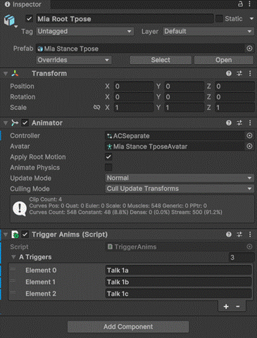
https://gyazo.com/0afef656052c19175910d4b5458591b1
- Test in playback
- Extra - try it with both the separate imported talk animations, and the ones you divided up. Get used to working with Animator this way.
Tutorial 03b 01, 02,
03– Mixamo in MotionBuilder with no Ref Node (No Root, As downloaded from
Mixamo or Google Drive example)
TPose
01 Mixamo TPose Video
https://youtu.be/EX0her-yPiY
02 Mixamo Add Anims Video
https://youtu.be/lv9VF3s_TeQ
03 Mixamo Fuse to Mixamo Autorig to Unity with No Root Video:
https://youtu.be/qDewDoXdcdA
- Use Clark NoRoot TPose Motionbuilder model from BB Week 3 Files.
- Characterise as before in Motionbuilder (Tutorial 01 and 02)
- If naming issues - Drag and drop bones in base Characterisation template (See BB Collaborate Video)
- Add Floor Plane as before
- Create Control Rig as before
- Insert in Story Track as before
- Insert Current take in Story – This should be the Tpose
- Create New Story Tracks for All Animation Clips
- Import New Anim Clip in Each (From above tutorial)
- Clip Mia Stand Looped
- Clip Stand Talk 1a Looped
- Clip Stand Talk 1b Looped
- Clip Stand Talk 1c Looped
- Mute tracks to see matching
- Plot the Tpose to the skeleton, save this as a scene file (not story!) so you have a character model in Tpose to import into Unity
- Or you could download a character with a Tpose from Mixamo as a “Unity fbx” and import directly.
- Export the Clips from Story one by one to have an Anim Set with No Root and no model (lighter).
- If issues exporting (not option in menu) Plot all animations and insert current take in new Story character track (See BB Collaborate Video)
- You could also use the Fbx Animation clips “as-is” in Unity for characters, but processing in Motionbuilder ensures they are accurate for the individual models.
- Build in Unity as with Mia (Humanoid Rig, Animation).
- follow further instructions below (06) for No Root.
Tutorial 03b 04, 05 – Mixamo in Motionbuilder with Ref Node (Root)
Mixamo with Root:
04 Add Root in Motionbuilder:
https://www.youtube.com/watch?v=OdEJm2z831c
05 Root In Unity: As with Mia before
https://www.youtube.com/watch?v=0QeekzOtGlc
1. Import Malcolm No Root Tpose fbx from BB zip
2. Characterise
3. Plot to Control Rig (30 fps)
4. Add Floor Plane from Asset Browser/Elements, Zero out
5. De characterise
6. Add Control Rig Reference as reference and floor plane for feet
7. Re Characterise
8. Test floor and Reference
9. Parent All Models (Select all at top level, Don’t Select Branches) drag to to Control Rig Reference to parent
10. Story Track - Character
11. Insert current take
12. Select Ghost, Reference in Character Controls Window, and Clip
13. Check Translate and Rotate Gizmo for Zero out
14. Do for
a. Tpose
b. stand idle
c. talk 1a
d. talk 1b
e. talk 1c
15. Plot the Tpose to the skeleton, save this as a scene file (not story!) so you have a character model in Tpose to import into Unity
16. Export the Clips from Story one by one to have an Anim Set with Root
Tutorial 03b 06 – Import to Unity and Test - Root and No Root
- Open New Unity Project
- Create folder in Project/Assets for Fbx Imports
- Drag in saved scene (Tpose)
- Drag in exported clips:
- stand idle
- talk 1a
- talk 1b
- talk 1c
- In Project expand Fbx imports
- Select Fbx clips one by one
- Preview clips
- Select edit in top right of Inspector Window
- Rig Tab
i. Animation Type - Humanoid Rig
ii. Avatar Definition – Create from this model
iii. Look at configure – just like MB Story
- Animations Tab
i. Turn off Anim. compression
ii. Loop Time - if needed
iii. At Bottom – Motion Dropdown
1. Root: Select Character Root from Motionbuilder (If having root)
2. No Root: If no root, do following:
a. Root transform rotation set to body orientation and bake to pose
b. Root transform position Y set to original, no bake
c. Root transform position XZ set to center of mass, no bake
d. Turn off the compression on the imported animations.
- Create New Scene
- into Hierarchy Drag Standard Assets/Characters/First Person Controller/Prefabs/FPSController
- At top menu create 3D game object/Plane, Zero out
- into Hierarchy Drag the Tpose Fbx Scene with character model
- Right click in project folder for fbx, create New Animator Controller, name MRootAC or MNoRootAC, depending on Imported Character
- Drag New Animator Controller into Slot on TPose Fbx in Project
- Turn on Apply Root Motion in Animator on character.
- Open an Animator Window
- Drag the Idle Fbx Clip into the Animator Window
- Play and Test
++++++++++++++++++++++++++++++++++++++++++++++++++++++++++++++++++++++
Recap for Root and No Root Difference:
1. Mixamo without a root
(without Motionbuilder reference, just downloaded):
http://answers.unity3d.com/questions/758387/characters-feet-are-shifting.html
Set Humanoid Rig as before
In Animation Tab:
a. Root transform rotation set to body orientation and bake to pose
b. Root transform position Y set to original, no bake
c. Root transform position XZ set to center of mass, no bake
d. Turn off the compression on the imported animations.
In Animator on Character:
a. Turn on Apply Root Motion in Animator Component on character.
2. Mixamo with Root Node in Unity (Motionbuilder Reference – Currently Recommended):
https://docs.unity3d.com/Manual/AnimationRootMotionNodeOnImportedClips.html
1. Apply root motion In Inspector/Animator for Game Object
2. Select Fbx animation
3. Select Edit button in Inspector
4. Rig Tab
a. Animation Type - Humanoid Rig
b. Avatar Definition – Create from this model
c. Look at configure – just like MB Story
5. Animations Tab
a. Turn off Anim. compression
b. Loop Time - if needed
c. At Bottom – Motion Dropdown
i. Select Character Root from Motionbuilder
6. Repeat for all Fbx Clips and Tposes
*Mixamo further use tips are at the end of the next tutorial sheet
Tutorial 03c - Mixamo Further Use (Full Content)
Mixamo
Further Use Details:
Work with a pre-created or original Mixamo character you download or make with
Fuse.
A. Mixamo Online (pre-created): Need personal Adobe ID
account as Login
1. Download a tpose with skin as “Fbx for Unity”
2. Download further animations with or without skin as “Fbx for Unity”
B. Mixamo Fuse (original characters):
1. Fuse 1.3 from Steam works https://store.steampowered.com/app/257400/Fuse/
2. Export to Obj
3. Upload to Mixamo as zip with MTL and textures as well
https://helpx.adobe.com/uk/creative-cloud/help/mixamo-rigging-animation.html
4. Rig in Mixamo
5. Download as Tpose with Skin
6. Use animations provided by Lecturer
7. Works across all Mixamo Characters, Try with various characters and animations
++++++++++++++++++++++++++++++++++++++++++++++++++++++++++++++++++++++++
Tutorial 03c 01 Finish Mixamo/Fuse Character and
Animations
Finish the Week 02 Unity Import Tutorial by setting up the talk animations in
Unity Animator Window.
1. Import Mixamo/Fuse Character, skeleton, in Tpose
2. Import Mixamo Fuse Character Clips Stand Loop and Stand Talk 1a, b, c
a. Import as separate anims first (Malcolm)
b. Import as one section and edit (Clark and Annie)
c. Future work - Use stand to edit other mixamo animations in Animation tab
3. Root all animations
4. Test in Animator Playback
Mixamo
Extras: Animation transfer
Reusing Animator Controllers for Mixamo Characters.
This will transfer animations and root between Mixamo characters, or Fuse/Mixamo Characters.*
1. First Mixamo Char:
a. Has Avatar and Animator Controller on skinned Tpose
b. Has unskinned anims in Animator Window
c. In Animation Tab in top level selection of asset: Anim compression off, Root Transform Rotation Baked into Pose ticked (Body Orientation)
2. Second Mixamo Char:
a. Has Avatar and Animator Controller on skinned Tpose
b. Animator Script Component in Hierarchy – Uses First AC and Avatar*
c. Animator Script Component in Hierarchy - Apply Root motion ticked
d. In Animation Tab in top level selection of asset: Anim compression off, Root Transform Rotation Baked into Pose ticked (Body Orientation)
3. Repeat for Mixamo/Fuse Characters after Tutorial 03 01
* Best to be between all Mixamo or allFuseToMixamo Characters due to scale difference – then root works
Otherwise, just use first AC and own Avatar to prevent scale issues, but lose root